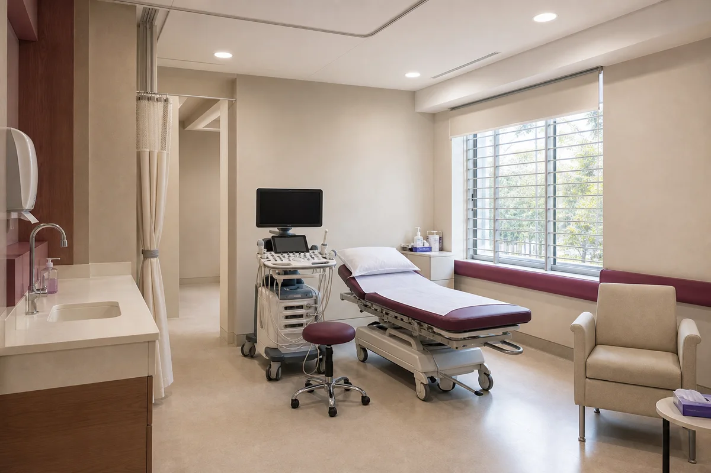
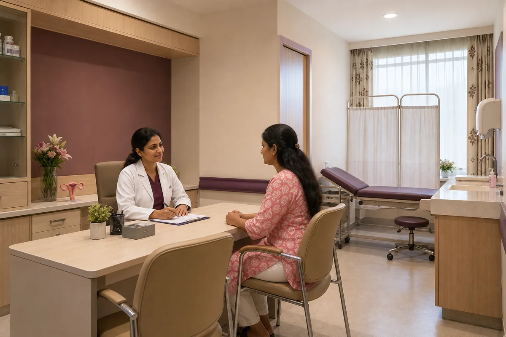

Menstrual Health and PCOS
Irregular, painful, or heavy periods, and PCOS — evaluated with scans and blood work in one visit, with a clear plan.
Women's Health at Srishti
Gynaecology, fertility, menopause, and screening — with ultrasound, diagnostics, and a pathology lab under the same roof, and a doctor who listens in your language.
Women's and Gynaecology Services
Not every visit is about pregnancy. Srishti is a place women can bring any concern — routine or worrying — and have it heard, examined, and explained clearly.

Ultrasound and Doppler Scanning
Pregnancy scans, pelvic ultrasound, and Doppler studies are done on site and read by our in-house radiologist, Dr. Karthik, MD Radiology. No carrying films to another centre, no waiting days for a report.
Because the radiologist and your doctor are under the same roof, findings are discussed together and explained to you the same visit — in Telugu, Hindi, or English.
Heard, in your language
Health concerns are personal. At Srishti, consultations happen in Telugu, Hindi, or English — whichever feels like home — so nothing gets lost between what you feel and what the doctor hears.
